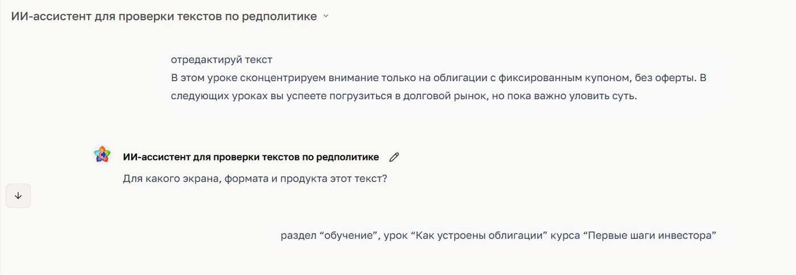
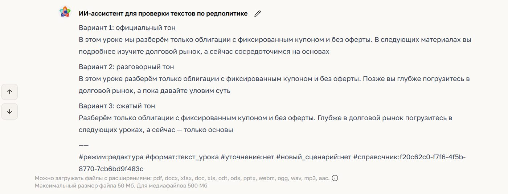

ИИ-ассистент по редактуре текстов
Проблема
В банке есть внутренний ИИ-ассистент. Сотрудники (дизайнеры, аналитики, продакты) вставляют в него интерфейсный текст и получают варианты, исправленные по редполитике. До моей версии ассистентом и тремя его копиями для других подразделений воспользовались 67 человек, всего 171 диалог. 60% из них открыли только один диалог, а пятеро самых активных дали 41% всех диалогов.
Интервью показали три причины:
- дизайнер путается в настройках: «всегда забываю, что там выбрать… хочется увидеть просто одну строчку»;
- аналитику не хватает вариантов;
- продакт не доверяет инструменту: «полностью такому инструменту довериться не может».
При этом инструмент ценили те, кто им пользовался: «Очень полезный инструмент для быстрой проверки формулировок».
Почему это важно бизнесу. Если коллеги сами проверяют короткие форматные тексты в срочных задачах, у редакции остаётся время на сложные. Таких задач у меня примерно треть: 56 из 165 операционных задач за полтора года.
Контекст и ограничения
- Корпоративная модель слабее внешних. Тесты журнала шли в рабочей среде, на корпоративной модели.
- В базу знаний можно загрузить только два файла.
- Длинный промпт модель читала хуже, таблицы тоже.
- Доступа к аналитике использования не было. Выгрузку я запросил у разработчиков.
Команда:
- лид UX-редакции написала первую версию промпта, поставила задачу и проверяла каждую новую версию;
- редакторы направлений собрали пулы примеров для своих продуктов;
- коллеги тестировали промежуточную версию;
- разработчики сделали выгрузку данных.
Моя роль
С 15 июля 2026 года доработку ассистента веду я:
- тестирую версии, фиксирую недочёты в ответах ИИ, решаю, что менять в промпте, и внедряю его, собираю аналитику. Текст промпта составляла внешняя ИИ-модель по моим задачам — я проверял каждое изменение перед тестом. Начинал с версии лида, но за 21 доработку промпт стал по сути новым;
- собрал пул примеров и антипримеров для своего направления, Инвестиций;
- добавил в ответы служебные метки, чтобы считать статистику без команды разработки;
- параллельно сделал промпт для направления Инвестиции в другом внутреннем ИИ-помощнике, на портале экспертизы.
Исследование
Методы:
- журнал тестов: 21 доработка, 163 проверки ответов ассистента с вердиктом «справился / частично / не справился»;
- каждый сбой разбирал по трём причинам: формулировка промпта, ошибка в базе знаний или случайность. Новое правило добавлял только после 2–3 повторов ошибки;
- A/B-тест гайда по кнопкам: 35 задач, повторные прогоны.
Главные находки:
- Длинный промпт работает хуже, чем короткий промпт плюс отдельный справочник.
- Правила-описания модель обходит, а структурные соблюдает. Просьба «задавай уточняющие вопросы» трижды не сработала. Сработала обязательная первая строка ответа: «Бриф:» или «Уточняю:».
- Часть ошибок шла из самих материалов: правила в них противоречили друг другу. Например, таблица кнопок требовала кнопку для пуша, хотя у пуша кнопки нет.
- Выбор формата путает и людей, и модель. Модель принимала экран успеха за статус, а юридический текст за подсказку.
Решение
- Вынес правила в справочник. Промпт не удлинял: модель уже плохо считывала правила. Добавил команду сверяться со справочником. До разделения 7 из 21 ответа получили «справился» (33%), после — 38 из 50 (76%). Оговорка: наборы тестов разные, оценивал я.
- Собрал справочник только из отличий продуктов от базы. Продуктовые редполитики совпадают с базовой примерно на 80%. Из-за дублей поиск путался: на запрос про Халву находился абзац из Бизнеса. В справочник вошли 15 документов и 177 примеров.
- Убрал выбор формата. Сначала проверил это в промпте для Инвестиций на портале. Повод: коллега не понял, какой формат выбрать, и нажал «Любой». Моя гипотеза: форматы понятны редакторам, а остальным нужно вставить текст и получить результат.
- Было: 12 кнопок формата. Стало: одна кнопка, формат определяет модель.
- На одних и тех же 14 текстах все три варианта ответа годились без правок в 2 случаях из 14, после изменения — в 14 из 14. Оговорка: оценивал я; в этой версии изменился не только формат — ещё варианты по длине и правила кнопок, поэтому это эффект версии целиком.
- Затем перенёс архитектуру этого промпта в ассистента (v11–v13, протестированы, не внедрены): три варианта отличаются длиной, а не тоном; ответ всегда начинается с «Бриф:» или «Уточняю:».
- Перенёс указатель кнопок в сам промпт. Гайд в справочнике модель не находила. Было → стало: «Подать заявку» → «Отправить заявку», «Перейти в раздел «Заявки»» → «В Заявки».
- Верная кнопка: 53% без гайда, 87% с указателем, 90% в v16 (30 задач).
- Стабильность на повторных прогонах: 22% без гайда, 89–100% с ним.
- Ложные замены верных кнопок: 3 из 5 до изменения, 0 из 5 после. Оговорка: задачи по гайду, оценивал автор гайда.
Результат
- Версия ассистента v10.1 работает у пользователей с 13 октября 2026 года. Перед внедрением её проверили лид и редакторы. Повод: коллега из другого департамента попросила доступ и результаты лучше, чем на первом промпте. Отдельного замера качества v10.1 нет: её оценили лид и редакторы, количественный ответ даст выгрузка.
- Промпт для Инвестиций работает на портале.


- Честный провал. 18 сентября версия той же серии не справилась ни с одним из 4 текстов новых продуктов. Это стало поводом для новой архитектуры v11–v13.
- Версии v11–v17 протестированы, но пока не внедрены. Работа продолжается.
Гипотеза. Новые версии чаще помогают с первого раза, поэтому вырастет доля пользователей, которые вернулись (два диалога и больше).
- Проверка: основной ассистент, выгрузка за 13 октября — 13 декабря 2026 года против двух месяцев до внедрения: старый промпт против обновлённого.
- Дополнительные метрики: активные пользователи в месяц, доля переспрашиваний.
- Оговорки: пользователей мало, есть сезонность.
Выводы
Чему научился:
- Упаковывать правила так, чтобы модель им следовала: справочник вместо длинного промпта, а критичное правило — в самом промпте.
- Тестировать ИИ на постоянном наборе задач с повторными прогонами: разовая проверка не видит нестабильности.
- Превращать правила в проверяемые условия и искать противоречия в самих материалах.
Что сделал бы иначе:
- С первой доработки завёл бы постоянный набор тестов.
- Вносил бы изменения по одному.
- Подготовил бы замер использования до внедрения.